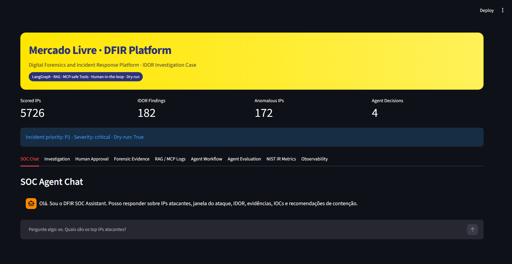

IDOR Response Platform
Digital Forensics & Incident Response · GenAI Agents · Human-in-the-loop · NIST IR · SOC Observability
Technical Challenge — Technical Leader, Digital Forensics and Incident Response Mercado Livre / Mercado Libre Cybersecurity Case
The IDOR Response Platform is an end-to-end Digital Forensics and Incident Response platform designed to investigate, explain, validate and safely respond to IDOR — Insecure Direct Object Reference incidents.
The project was built as a complete DFIR/SOC investigation platform, combining:
All containment actions are executed in dry-run mode, ensuring safety, auditability and human oversight.
| Challenge Requirement | Platform Capability | Status | | ---------------------------- | -------------------------------------- | ------ | | Incident classification | Triage Agent | ✅ | | Severity classification | Risk scoring + Triage Agent | ✅ | | Hypothesis generation | Triage Agent | ✅ | | Investigation prioritization | Risk score + anomaly convergence | ✅ | | Forensic analysis | Forensic Analyst Agent | ✅ | | Patient zero identification | Forensic evidence package | ✅ | | Initial exploitation window | Attack timeline | ✅ | | Automation assessment | Bot/anomaly/sequential access analysis | ✅ | | MITRE ATT&CK mapping | Forensic Analyst Agent | ✅ | | Immediate containment | Response Advisor Agent | ✅ | | Strategic containment | NIST IR layer | ✅ | | Human approval | Human Approval Agent | ✅ | | Dry-run execution | Safe simulated tools | ✅ | | Decision logging | Agent decision log | ✅ | | Workflow state machine | LangGraph workflow | ✅ | | Workflow re-entry | Request more evidence scenario | ✅ | | Response metrics | TTD / TTR / TTC | ✅ | | Dashboards / metrics | Streamlit + observability artifacts | ✅ | | Final reports | Technical report + executive summary | ✅ |
text
Raw Web Logs
│
▼
Evidence Integrity / Chain of Custody
│
▼
URI Parsing
│
▼
Feature Engineering
│
▼
IDOR Detection
│
▼
Risk Scoring
│
▼
Anomaly Detection
│
▼
Forensic Evidence Package
│
▼
LangGraph Investigation Agents
│
├── Triage Agent
├── Forensic Analyst Agent
├── Response Advisor Agent
└── Human Approval Agent
│
▼
Human-in-the-loop Workflow
│
▼
NIST Incident Response Metrics
│
▼
Observability & SOC Monitoring
│
▼
SOC Copilot / Streamlit UI
│
▼
Technical Reports & Executive Summary
| Layer | Technology | | ---------------------- | ----------------------------------- | | Language | Python 3.12 | | Data processing | Polars | | Storage format | Parquet | | Validation | Pydantic v2 | | ML / anomaly detection | Scikit-learn / Isolation Forest | | Agent orchestration | LangGraph | | LLM interface | OpenAI-compatible API via LangChain | | UI | Streamlit | | Testing | Pytest | | Reporting | Markdown + Matplotlib figures | | Evidence format | JSON | | Workflow visualization | Mermaid / PNG |
Input file:
text
data/raw/three_months.csv
Observed dataset size:
| Metric | Value | | -------------- | --------: | | Raw events | 4,478,619 | | Columns | 8 | | Analyzed IPs | 5,726 | | IDOR findings | 182 | | Anomalous IPs | 172 | | Generated IOCs | 586 |
| Original Column | Normalized Column |
| ----------------- | ----------------- |
| timestamp | timestamp |
| http_staus | status_code |
| http_host | host |
| http_uri | uri |
| http_method | method |
| http_referer | referer |
| http_user_agent | user_agent |
| source_ip | source_ip |
Extracted URI fields:
| Field | Description |
| ------------ | --------------------------------------------------------- |
| invoice_id | Direct object identifier used for invoice access analysis |
| site_id | Site/country/business context identifier |
| auth_token | Token-like value observed in request URI |
```text src/ ├── agents/ │ ├── conversation_agent.py │ ├── conversation_memory.py │ ├── export_graph.py │ ├── forensic_agent.py │ ├── graph.py │ ├── human_approval_agent.py │ ├── human_decision_simulator.py │ ├── interactive_console.py │ ├── llm_client.py │ ├── response_agent.py │ ├── response_formatter.py │ ├── runner.py │ ├── soc_assistant.py │ ├── state.py │ ├── triage_agent.py │ └── workflow.py │ ├── config/ │ ├── llm_settings.py │ └── settings.py │ ├── detection/ │ ├── anomaly_detector.py │ ├── bot_detector.py │ ├── idor_detector.py │ ├── isolation_forest.py │ └── risk_scoring.py │ ├── evaluation/ │ ├── agent_evaluator.py │ ├── evaluation_report.py │ ├── question_bank.py │ └── scoring.py │ ├── forensic/ │ ├── evidence_builder.py │ ├── ioc_generator.py │ └── timeline.py │ ├── ingestion/ │ ├── integrity.py │ └── loader.py │ ├── ir/ │ ├── containment_strategy.py │ ├── nist_lifecycle.py │ ├── response_metrics.py │ ├── root_cause_analysis.py │ └── runner.py │ ├── mcp_gateway/ │ └── safe_tools.py │ ├── memory/ │ └── investigation_memory.py │ ├── models/ │ ├── events.py │ └── features.py │ ├── observability/ │ ├── agent_metrics.py │ ├── healthcheck.py │ ├── platform_metrics.py │ ├── runner.py │ └── soc_dashboard_data.py │ ├── parsing/ │ └── uri_parser.py │ ├── rag/ │ ├── local_retriever.py │ └── knowledge_base.py │ ├── reporting/ │ ├── figures.py │ ├── markdown_builder.py │ ├── pdf_exporter.py │ ├── report_data_loader.py │ └── runner.py │ ├── response/ │ └── playbook.py │ ├── tools/ │ └── response_tools.py │ ├── ui/ │ └── streamlit_app.py │ ├── utils/ │ └── filesystem.py │ └── app.py
data/ ├── raw/ ├── processed/ ├── evidence/ ├── evaluation/ ├── observability/ ├── memory/ └── knowledge/
reports/ ├── technical_report.md ├── executive_summary.md ├── architecture.md ├── methodology.md ├── evidence_appendix.md └── figures/ ├── agent_coverage.png ├── agent_metrics.png ├── pipeline_metrics.png └── streamlit_ui.png
tests/ ├── test_agent_evaluation.py ├── test_agents.py ├── test_anomaly_detection.py ├── test_conversation_agent.py ├── test_detection.py ├── test_forensic.py ├── test_human_approval.py ├── test_human_orchestration.py ├── test_integrity.py ├── test_nist_ir.py ├── test_observability.py ├── test_reporting.py └── test_uri_parser.py ```
This section is the single source of truth for setup, installation, environment configuration, dataset requirements, compilation, pipeline execution, automated tests, integration validation, human approval scenarios, SOC Copilot modes, Streamlit UI validation, smoke tests, release validation and local Git cleanup.
It is intentionally detailed so that a technical reviewer can reproduce the Release 1.0 delivery from a clean clone while also having the option to run the same workflow through reproducibility scripts.
The official submitted version is frozen in the Git tag:
text
v1.0.0
The expected Release 1.0 commit is:
text
35c26e1 feat(sprint-4.0): generate final delivery package and presentation assets
The full pipeline requires the original challenge dataset at:
text
data/raw/three_months.csv
This raw file is intentionally not versioned in Git because it is large and should be treated as raw input evidence.
In a clean clone, the recommended execution order is:
text
clone repository
↓
create virtual environment
↓
install dependencies
↓
configure .env
↓
place data/raw/three_months.csv
↓
compile critical modules
↓
run pipeline
↓
run pytest
↓
validate artifacts
↓
validate metrics
↓
validate Streamlit UI
The pipeline should be executed before the full test suite in a clean clone because some integration tests validate artifacts generated in:
text
data/evidence/
data/evaluation/
data/observability/
Use this option when the reviewer wants to execute the validation flow command by command and inspect every stage of the platform.
```bash cd ~/OneDrive/Documentos
rm -rf idor-clean-test
git clone -b master https://github.com/mauriciosobrinho/digital_forensics_and_incident_response.git idor-clean-test
cd idor-clean-test
git branch --show-current ```
Expected:
text
master
bash
git log --oneline -1
Expected:
text
35c26e1 feat(sprint-4.0): generate final delivery package and presentation assets
bash
git tag --list
Expected:
text
v1.0.0
Optional:
bash
git checkout v1.0.0
git checkout master
```bash ls -lah
ls -lah src data reports presentation demo scripts ```
Expected:
text
src/
data/
reports/
presentation/
demo/
scripts/
requirements.txt
README.md
```bash python -m venv .venv
source .venv/Scripts/activate
which python
python --version ```
Expected:
text
Python 3.12.x
Windows CMD:
bat
.venv\Scripts\activate
Linux/macOS:
bash
source .venv/bin/activate
```bash python -m pip install --upgrade pip
pip install -r requirements.txt ```
bash
cat > .env <<'EOF'
AGENTS_USE_LLM=false
AGENTS_DRY_RUN=true
HUMAN_APPROVAL_MODE=simulated
HUMAN_DECISION_SCENARIO=approve
LANGGRAPH_CHECKPOINT_BACKEND=memory
EOF
Validate:
bash
cat .env
Expected:
env
AGENTS_USE_LLM=false
AGENTS_DRY_RUN=true
HUMAN_APPROVAL_MODE=simulated
HUMAN_DECISION_SCENARIO=approve
LANGGRAPH_CHECKPOINT_BACKEND=memory
Purpose:
Create raw directory:
bash
mkdir -p data/raw
Copy dataset:
bash
cp /path/to/three_months.csv data/raw/three_months.csv
Validate:
bash
ls -lah data/raw/three_months.csv
Expected:
text
data/raw/three_months.csv
If the file is missing the platform will intentionally fail during chain-of-custody generation because SHA-256 integrity validation is mandatory.
```bash python -m py_compile src/app.py
python -m py_compile src/ui/streamlit_app.py
python -m py_compile src/reporting/pdf_exporter.py
python -m py_compile scripts/generate_final_delivery_package.py
python -m py_compile src/agents/evidence_router.py
python -m py_compile src/agents/evidence_answer_templates.py
python -m py_compile src/agents/evidence_grounded_copilot.py
python -m py_compile src/agents/conversation_agent.py ```
Expected:
text
Return to prompt without errors.
bash
python -m src.app
Expected:
text
Pipeline completed successfully.
Agent evaluation coverage : 100.0%
SOC observability health : healthy
Windows may show non-blocking WeasyPrint warnings.
Keep:
env
HUMAN_DECISION_SCENARIO=approve
Run:
bash
pytest -v
Expected after Sprint 4.1:
text
46 passed
```bash ls -lah data/evidence
ls -lah data/evaluation
ls -lah data/observability
ls -lah reports
ls -lah presentation
ls -lah demo/outputs ```
bash
python -c "import json;d=json.load(open('data/observability/platform_metrics.json',encoding='utf-8'));print(json.dumps(d['pipeline_metrics'],indent=2,ensure_ascii=False))"
bash
python -c "import json;d=json.load(open('data/observability/soc_dashboard_data.json',encoding='utf-8'));print(json.dumps(d['topline'],indent=2,ensure_ascii=False))"
bash
python -c "import json;d=json.load(open('data/evaluation/agent_eval_report.json',encoding='utf-8'));print(json.dumps(d['summary'],indent=2,ensure_ascii=False))"
Expected:
text
4,478,619 logs
5,726 IPs
182 findings
172 anomalous IPs
586 IOCs
100% agent evaluation coverage
healthy SOC observability
bash
python -m src.app
Expected:
text
human_loop_count = 0
decision_log = 4
Set:
env
HUMAN_DECISION_SCENARIO=reject
Run:
bash
python -m src.app
Expected:
text
workflow_stage = rejected
decision_log = 4
Set:
env
HUMAN_DECISION_SCENARIO=modify
Run:
bash
python -m src.app
Expected:
text
modified_action_plan != {}
decision_log = 4
Set:
env
HUMAN_DECISION_SCENARIO=request_more_evidence
Run:
bash
python -m src.app
Expected:
text
human_loop_count = 1
decision_log = 7
bash
cat > .env <<'EOF'
AGENTS_USE_LLM=false
AGENTS_DRY_RUN=true
HUMAN_APPROVAL_MODE=simulated
HUMAN_DECISION_SCENARIO=approve
LANGGRAPH_CHECKPOINT_BACKEND=memory
EOF
bash
pytest -v
Expected:
text
46 passed
The SOC Copilot supports two different validation modes.
Configuration:
env
AGENTS_USE_LLM=false
HUMAN_DECISION_SCENARIO=approve
Use this mode for:
Expected behavior:
text
Question
↓
RAG lookup
↓
Template response
↓
Deterministic output
In this mode, responses may look more template-based because the LLM is disabled. That is expected and correct.
Configuration:
env
AGENTS_USE_LLM=true
HUMAN_DECISION_SCENARIO=approve
Additional provider-specific configuration is required. Example with Groq:
```env AGENTS_USE_LLM=true AGENTS_DRY_RUN=true HUMAN_APPROVAL_MODE=simulated HUMAN_DECISION_SCENARIO=approve LANGGRAPH_CHECKPOINT_BACKEND=memory
LLM_PROVIDER=groq LLM_API_KEY=gsk_... LLM_MODEL=llama-3.3-70b-versatile LLM_BASE_URL=https://api.groq.com/openai/v1 ```
Use this mode for:
Expected behavior:
text
Question
↓
RAG lookup
↓
Relevant context
↓
LLM reasoning
↓
Natural-language analyst response
Recommended executive demonstration sequence:
Restore deterministic configuration:
bash
cat > .env <<'EOF'
AGENTS_USE_LLM=false
AGENTS_DRY_RUN=true
HUMAN_APPROVAL_MODE=simulated
HUMAN_DECISION_SCENARIO=approve
LANGGRAPH_CHECKPOINT_BACKEND=memory
EOF
Run the UI:
bash
streamlit run src/ui/streamlit_app.py
Open:
text
http://localhost:8501
Suggested SOC Chat questions:
text
Who is the patient zero?
Was the attack automated?
What containment is recommended?
What evidence supports IDOR exploitation?
What are the TTD TTR TTC metrics?
Expected: the UI should answer using deterministic retrieval/template behavior.
Configure LLM mode:
```bash cat > .env <<'EOF' AGENTS_USE_LLM=true AGENTS_DRY_RUN=true HUMAN_APPROVAL_MODE=simulated HUMAN_DECISION_SCENARIO=approve LANGGRAPH_CHECKPOINT_BACKEND=memory
LLM_PROVIDER=groq LLM_API_KEY=gsk_... LLM_MODEL=llama-3.3-70b-versatile LLM_BASE_URL=https://api.groq.com/openai/v1 EOF ```
Run the UI:
bash
streamlit run src/ui/streamlit_app.py
Open:
text
http://localhost:8501
Suggested SOC Chat questions:
text
Who is the patient zero?
Was the attack automated?
What containment is recommended?
What evidence supports IDOR exploitation?
What is the business impact?
Expected: the UI should provide richer natural-language responses using the configured LLM provider.
Validate the following tabs:
text
SOC Chat
Investigation
Human Approval
Forensic Evidence
RAG / MCP Logs
Agent Workflow
Agent Evaluation
NIST IR Metrics
Observability
Expected: all tabs should load without runtime errors after the pipeline has generated the required artifacts.
Running the pipeline and UI may regenerate local artifacts. This is expected.
Check repository state:
bash
git status
Restore tracked generated artifacts if needed:
bash
git restore data/evaluation data/observability data/memory reports/technical_report.md reports/figures/agent_metrics.png
Remove optional non-generated PDF marker files if present:
bash
rm -f reports/technical_report.pdf.not_generated.txt reports/executive_summary.pdf.not_generated.txt
Validate clean workspace:
bash
git status
Expected:
text
nothing to commit, working tree clean
The platform uses an OpenAI-compatible client interface for most providers. In most cases, change only:
env
LLM_PROVIDER
LLM_MODEL
LLM_API_KEY
LLM_BASE_URL
```env AGENTS_USE_LLM=true
LLM_PROVIDER=groq LLM_API_KEY=gsk_... LLM_MODEL=llama-3.3-70b-versatile LLM_BASE_URL=https://api.groq.com/openai/v1 ```
```env AGENTS_USE_LLM=true
LLM_PROVIDER=openai LLM_API_KEY=sk-proj-... LLM_MODEL=gpt-4.1-mini LLM_BASE_URL= ```
```env AGENTS_USE_LLM=true
LLM_PROVIDER=openrouter LLM_API_KEY=sk-or-... LLM_MODEL=openai/gpt-4.1-mini LLM_BASE_URL=https://openrouter.ai/api/v1 ```
```env AGENTS_USE_LLM=true
LLM_PROVIDER=openrouter LLM_API_KEY=sk-or-... LLM_MODEL=anthropic/claude-3.5-sonnet LLM_BASE_URL=https://openrouter.ai/api/v1 ```
```env AGENTS_USE_LLM=true
LLM_PROVIDER=openrouter LLM_API_KEY=sk-or-... LLM_MODEL=anthropic/claude-3.5-haiku LLM_BASE_URL=https://openrouter.ai/api/v1 ```
```env AGENTS_USE_LLM=true
LLM_PROVIDER=openrouter LLM_API_KEY=sk-or-... LLM_MODEL=anthropic/claude-3-opus LLM_BASE_URL=https://openrouter.ai/api/v1 ```
```env AGENTS_USE_LLM=true
LLM_PROVIDER=gemini LLM_API_KEY=your_gemini_key LLM_MODEL=gemini-2.5-flash LLM_BASE_URL=https://generativelanguage.googleapis.com/v1beta/openai/ ```
```env AGENTS_USE_LLM=true
LLM_PROVIDER=openrouter LLM_API_KEY=sk-or-... LLM_MODEL=google/gemini-2.5-flash LLM_BASE_URL=https://openrouter.ai/api/v1 ```
```env AGENTS_USE_LLM=true
LLM_PROVIDER=perplexity LLM_API_KEY=pplx-... LLM_MODEL=sonar-pro LLM_BASE_URL=https://api.perplexity.ai ```
```env AGENTS_USE_LLM=true
LLM_PROVIDER=perplexity LLM_API_KEY=pplx-... LLM_MODEL=sonar-reasoning-pro LLM_BASE_URL=https://api.perplexity.ai ```
```env AGENTS_USE_LLM=true
LLM_PROVIDER=xai LLM_API_KEY=xai-... LLM_MODEL=grok-3 LLM_BASE_URL=https://api.x.ai/v1 ```
```env AGENTS_USE_LLM=true
LLM_PROVIDER=xai LLM_API_KEY=xai-... LLM_MODEL=grok-3-mini LLM_BASE_URL=https://api.x.ai/v1 ```
Example for local gateways such as LM Studio, Ollama-compatible proxies, LiteLLM, vLLM or local OpenAI-compatible endpoints:
```env AGENTS_USE_LLM=true
LLM_PROVIDER=local LLM_API_KEY=local_or_dummy_key LLM_MODEL=local-model-name LLM_BASE_URL=http://localhost:1234/v1 ```
env
LLM_PROVIDER=openrouter
LLM_API_KEY=sk-or-...
LLM_MODEL=openai/gpt-4.1-mini
LLM_BASE_URL=https://openrouter.ai/api/v1
env
LLM_PROVIDER=openrouter
LLM_API_KEY=sk-or-...
LLM_MODEL=anthropic/claude-3.5-sonnet
LLM_BASE_URL=https://openrouter.ai/api/v1
env
LLM_PROVIDER=openrouter
LLM_API_KEY=sk-or-...
LLM_MODEL=google/gemini-2.5-flash
LLM_BASE_URL=https://openrouter.ai/api/v1
env
LLM_PROVIDER=groq
LLM_API_KEY=gsk_...
LLM_MODEL=llama-3.3-70b-versatile
LLM_BASE_URL=https://api.groq.com/openai/v1
env
LLM_PROVIDER=perplexity
LLM_API_KEY=pplx-...
LLM_MODEL=sonar-pro
LLM_BASE_URL=https://api.perplexity.ai
For native Claude/Gemini SDKs, the SDK and client implementation may change. If using Claude or Gemini via OpenRouter, the existing OpenAI-compatible code path can be preserved and only the model changes:
env
LLM_PROVIDER=openrouter
LLM_API_KEY=sk-or-...
LLM_MODEL=anthropic/claude-3.5-sonnet
LLM_BASE_URL=https://openrouter.ai/api/v1
or:
env
LLM_PROVIDER=openrouter
LLM_API_KEY=sk-or-...
LLM_MODEL=google/gemini-2.5-flash
LLM_BASE_URL=https://openrouter.ai/api/v1
bash
python -m src.app
The pipeline generates:
bash
python -m py_compile src/app.py
python -m py_compile src/ui/streamlit_app.py
bash
pytest -v
bash
python -m src.app
bash
streamlit run src/ui/streamlit_app.py
Natural language interface for investigation:
bash
python -m src.agents.interactive_console
Example questions:
text
Quais são os top IPs atacantes?
Qual foi a janela do ataque?
Explique IDOR e Broken Access Control.
O ataque apresenta automação?
Quem é o patient zero?
Quais ações de contenção são recomendadas?
Qual foi o resultado da intervenção humana?
Mostre a timeline do workflow.
Houve reentrada no agente forense?
Quais são as métricas TTD, TTR e TTC?
Shows raw JSON payloads for inspection:
bash
python -m src.agents.interactive_console --json
Use this mode to validate:
```bash git status
git restore data/evaluation data/observability data/memory reports/technical_report.md reports/figures/agent_metrics.png
rm -f reports/technical_report.pdf.not_generated.txt
rm -f reports/executive_summary.pdf.not_generated.txt
git status ```
Expected:
text
nothing to commit, working tree clean
Use this option when the reviewer wants a one-command reproducible validation workflow.
text
scripts/
├── setup_env.sh
├── setup_env.bat
├── validate_static.sh
├── validate_static.bat
├── run_pipeline.sh
├── run_pipeline.bat
├── run_tests.sh
├── run_tests.bat
├── run_ui.sh
├── run_ui.bat
├── set_env_deterministic.sh
├── set_env_deterministic.bat
├── set_env_llm_example.sh
├── set_env_llm_example.bat
├── validate_release.sh
└── validate_release.bat
| Script | Purpose | |----------|----------| | setup_env | Create venv and install dependencies | | set_env_deterministic | Create deterministic .env | | set_env_llm_example | Generate LLM example configuration | | validate_static | Compile critical modules | | run_pipeline | Execute full pipeline | | run_tests | Execute pytest suite | | run_ui | Launch Streamlit UI | | validate_release | Execute deterministic end-to-end validation |
Git Bash / Linux / macOS:
```bash chmod +x scripts/*.sh
scripts/validate_release.sh ```
Windows CMD:
bat
scripts\validate_release.bat
This executes:
text
set_env_deterministic
↓
validate_static
↓
run_pipeline
↓
run_tests
Expected:
text
46 passed
Release validation completed successfully.
Git Bash:
```bash chmod +x scripts/*.sh
scripts/setup_env.sh
source .venv/Scripts/activate
scripts/set_env_deterministic.sh
scripts/validate_static.sh
scripts/run_pipeline.sh
scripts/run_tests.sh
scripts/run_ui.sh ```
Windows CMD:
```bat scripts\setup_env.bat
.venv\Scripts\activate
scripts\set_env_deterministic.bat
scripts\validate_static.bat
scripts\run_pipeline.bat
scripts\run_tests.bat
scripts\run_ui.bat ```
Generate:
Git Bash:
bash
scripts/set_env_llm_example.sh
Windows CMD:
bat
scripts\set_env_llm_example.bat
Creates:
text
.env.example.llm
The file never overwrites .env.
Replace:
env
LLM_API_KEY=replace_me
with a valid provider key.
Git Bash:
```bash scripts/set_env_deterministic.sh
scripts/validate_static.sh
scripts/run_pipeline.sh
scripts/run_tests.sh ```
Windows CMD:
```bat scripts\set_env_deterministic.bat
scripts\validate_static.bat
scripts\run_pipeline.bat
scripts\run_tests.bat ```
Expected:
text
46 passed

Launch:
bash
streamlit run src/ui/streamlit_app.py
| Tab | Purpose | What to Expect |
| ------------------- | ---------------------------- | ----------------------------------------------------------------- |
| SOC Chat | Natural language SOC Copilot | Ask investigation questions in Portuguese or English |
| Investigation | Agent investigation output | Triage, forensic analysis and response advisor JSON |
| Human Approval | Human-in-the-loop governance | Approval request, approval decision and dry-run status |
| Forensic Evidence | Evidence package | Chain of custody, summary, attack indicators and forensic context |
| RAG / MCP Logs | Retrieval and safe tool logs | RAG context and MCP-safe tool execution history |
| Agent Workflow | LangGraph execution trace | Workflow timeline, current state and decision transitions |
| Agent Evaluation | Validation suite | Overall coverage, passed/partial/failed checks and question bank |
| NIST IR Metrics | Incident response metrics | TTD, TTR, TTC, containment strategy and root cause analysis |
| Observability | SOC monitoring | Health, pipeline metrics, agent metrics and evidence completeness |
The platform includes an explicit validation suite that maps challenge requirements to expected evidence in each agent output.
| Agent / Component | Coverage | | --- | ---: | | Triage Agent | 100% | | Forensic Analyst Agent | 100% | | Response Advisor Agent | 100% | | Human Approval Agent | 100% | | LangGraph Workflow | 100% | | SOC Copilot | 100% |
| Evaluation Metric | Value | | --- | ---: | | Total questions | 15 | | Overall score | 1.0 | | Overall coverage | 100% | | Passed | 15 | | Partial | 0 | | Failed | 0 |
The validation suite proves that the agentic layer covers classification, hypothesis generation, prioritization, forensic reasoning, patient zero identification, automation assessment, MITRE mapping, containment planning, human approval and workflow re-entry.
| Artifact | Purpose |
| --- | --- |
| data/evidence/chain_of_custody.json | SHA-256 integrity and forensic provenance |
| data/processed/parsed_events.parquet | Normalized events and extracted URI fields |
| data/processed/ip_features.parquet | IP-level features for investigation and detection |
| data/processed/idor_findings.parquet | IDOR-compatible findings |
| data/processed/anomaly_scores.parquet | Isolation Forest anomaly scores |
| data/evidence/attack_timeline.json | Attack window and timeline reconstruction |
| data/evidence/iocs.json | Indicators of compromise |
| data/evidence/forensic_evidence.json | Consolidated forensic evidence package |
| data/evidence/agent_investigation.json | Consolidated multi-agent investigation output |
| data/evidence/agent_decision_log.json | Agent and human decision trail |
| data/evidence/human_approval_decision.json | Human approval governance evidence |
| data/evidence/nist_incident_report.json | NIST-style incident response report |
| data/evaluation/agent_eval_report.json | Agent validation and coverage report |
| data/observability/platform_metrics.json | Platform observability metrics |
| data/observability/soc_dashboard_data.json | SOC dashboard data |
| reports/technical_report.md | Technical report |
| reports/executive_summary.md | Executive summary |
| presentation/technical_pitch.pptx | Technical presentation deck |
| presentation/executive_pitch.pptx | Executive presentation deck |
| demo/demo_script.md | Demonstration script |
| demo/demo_questions.md | Demo question bank |
text
data/processed/
├── parsed_events.parquet
├── ip_features.parquet
├── idor_findings.parquet
├── risk_scores.parquet
├── suspicious_ips.parquet
├── anomaly_scores.parquet
└── anomalous_ips.parquet
text
data/evidence/
├── chain_of_custody.json
├── attack_timeline.json
├── iocs.json
├── forensic_evidence.json
├── agent_investigation.json
├── agent_decision_log.json
├── agent_response_playbook.json
├── human_approval_request.json
├── human_approval_decision.json
├── agent_workflow_timeline.json
├── langgraph_workflow.mmd
├── langgraph_workflow.png
├── nist_incident_report.json
├── response_metrics.json
├── containment_strategy.json
└── root_cause_analysis.json
text
data/evaluation/
├── agent_question_bank.json
├── agent_eval_results.json
├── agent_eval_report.json
└── agent_eval_summary.csv
Latest validation:
| Metric | Value | | ---------------- | ----: | | Overall coverage | 100% | | Passed | 15 | | Partial | 0 | | Failed | 0 |
text
data/observability/
├── platform_metrics.json
├── agent_metrics.json
├── healthcheck.json
└── soc_dashboard_data.json
Example topline:
json
{
"health": "healthy",
"severity": "critical",
"priority": "P1",
"dry_run": true,
"agent_evaluation_coverage": 100.0
}
text
reports/
├── technical_report.md
├── executive_summary.md
├── architecture.md
├── methodology.md
├── evidence_appendix.md
└── figures/
├── agent_coverage.png
├── agent_metrics.png
└── pipeline_metrics.png
| Metric | Value | | ------------------------- | --------: | | Logs processed | 4,478,619 | | IPs analyzed | 5,726 | | IDOR findings | 182 | | Anomalous IPs | 172 | | IOCs generated | 586 | | Agent evaluation coverage | 100% | | Severity | critical | | Priority | P1 | | Dry-run | true |
| Metric | Meaning | Current Result | | ------ | --------------- | ------------------------------: | | TTD | Time to Detect | Historical retrospective metric | | TTR | Time to Respond | 0.0h | | TTC | Time to Contain | 0.0h dry-run |
Interpretation:
| Sprint | Description | Status | | ---------- | ---------------------------------------------------- | ------ | | Sprint 0 | Architecture and planning | ✅ | | Sprint 1.1 | Evidence ingestion, chain of custody and URI parsing | ✅ | | Sprint 1.2 | Feature engineering and detection base | ✅ | | Sprint 1.3 | Forensic evidence package | ✅ | | Sprint 2.x | IDOR detection, risk scoring and anomaly detection | ✅ | | Sprint 3.1 | LangGraph investigation agents | ✅ | | Sprint 3.2 | Human approval and dry-run response | ✅ | | Sprint 3.3 | Streamlit SOC interface | ✅ | | Sprint 3.4 | Natural language SOC Copilot | ✅ | | Sprint 3.5 | Human-in-the-loop orchestration | ✅ | | Sprint 3.6 | Agent evaluation and validation suite | ✅ | | Sprint 3.7 | NIST incident response metrics | ✅ | | Sprint 3.8 | Observability and SOC monitoring | ✅ | | Sprint 3.9 | Final technical report and executive summary | ✅ | | Sprint 4.0 | Demo package and presentation | ✅ |
This section documents the official post-Release 1.0 roadmap. Release 1.0 is considered complete and published. The next sprints do not exist because the delivery is incomplete; they exist because the MVP is now solid enough to evolve from a technical challenge into an enterprise-grade Digital Forensics & Incident Response platform.
Release 1.0 delivered the complete MVP required for the Technical Leader — Security Incident Response challenge.
| Sprint | Scope | Delivered | | --- | --- | --- | | Sprint 0 | Architecture & Planning | Project structure, DFIR architecture, implementation roadmap | | Sprint 1.1 | Ingestion & Integrity | Log ingestion, SHA-256 chain of custody, URI parsing | | Sprint 1.2 | Feature Engineering | IP-level features, invoice diversity, token diversity, request metrics | | Sprint 1.3 | Forensic Evidence Foundation | Timeline, IOC generation, forensic evidence package |
| Sprint | Scope | Delivered | | --- | --- | --- | | Sprint 2.1 | IDOR Detection | IDOR findings, invoice enumeration detection, suspicious IPs | | Sprint 2.2 | Anomaly Detection | Isolation Forest, anomalous IP detection, anomaly scores | | Sprint 2.3 | IOC Generation & Timeline Reconstruction | Structured IOCs, attack timeline, forensic JSON outputs |
| Sprint | Scope | Delivered | | --- | --- | --- | | Sprint 3.1 | LangGraph Multi-Agent Investigation | Triage, Forensic Analyst, Response Advisor agents | | Sprint 3.2 | MCP + RAG + Memory | Knowledge retrieval, tool logs, investigation memory | | Sprint 3.3 | SOC Copilot | Natural-language investigation interface | | Sprint 3.4 | Streamlit Investigation UI | SOC-facing UI with investigation, workflow and evidence tabs |
| Sprint | Scope | Delivered | | --- | --- | --- | | Sprint 3.5 | Agent Orchestration & Human-in-the-loop | Workflow state machine, decision log, human approval states |
Delivered governance capabilities:
| Sprint | Scope | Delivered | | --- | --- | --- | | Sprint 3.6 | Agent Evaluation & Validation | Question bank, evaluation engine, scoring, coverage reports |
Delivered validation capabilities:
| Sprint | Scope | Delivered | | --- | --- | --- | | Sprint 3.7 | NIST Incident Response | NIST report, response metrics, containment strategy, root cause analysis |
Delivered incident response capabilities:
| Sprint | Scope | Delivered | | --- | --- | --- | | Sprint 3.8 | Observability & SOC Monitoring | Platform metrics, SOC dashboard data, agent metrics, healthcheck |
Delivered observability capabilities:
| Sprint | Scope | Delivered | | --- | --- | --- | | Sprint 3.9 | Documentation | README Enterprise, architecture, methodology, evidence appendix, technical report |
Delivered documentation capabilities:
| Sprint | Scope | Delivered | | --- | --- | --- | | Sprint 4.0 | Demo & Presentation | Presentation deck, demo outputs, investigation question bank, executive summary |
Delivered executive artifacts:
Objective: evolve the SOC Copilot from a RAG assistant into an evidence-grounded DFIR assistant.
Current limitation:
text
RAG documents
idor_playbook
incident_response_policy
The current Copilot responses are safe, but can still be generic when the answer exists in structured forensic artifacts.
Target behavior:
text
Evidence-grounded DFIR Assistant
The Copilot should answer first from structured evidence artifacts and only then use RAG or policy documents as fallback/enrichment.
New modules:
text
src/agents/
├── evidence_router.py
├── evidence_grounded_copilot.py
└── evidence_answer_templates.py
Primary evidence sources:
text
data/evidence/forensic_evidence.json
data/evidence/agent_investigation.json
data/evidence/nist_incident_report.json
data/observability/soc_dashboard_data.json
Expected artifact:
text
data/evidence/copilot_grounded_answers.json
Acceptance criteria:
Expected answer pattern:
```text Patient zero candidate: 204.210.158.207
Evidence: - earliest suspicious activity; - sequential enumeration pattern; - high risk score; - correlated IOC set.
Confidence: High ```
Platform value:
text
Sprint 4.2 — Professional SOC Copilot Reasoning & Vector RAG
Objectives:
Objective: transform the platform into a reproducible system that can be started with a single command.
Target structure:
text
docker/
├── app.Dockerfile
├── streamlit.Dockerfile
├── grafana/
├── prometheus/
└── compose/
Main deliverable:
text
docker-compose.yml
Execution model:
bash
docker compose up
Services expected to start:
Acceptance criteria:
docker compose up starts the platform successfully;.env;Platform value:
Objective: replace purely JSON-based observability with operational observability through Prometheus and Grafana.
New modules:
text
src/observability/
├── prometheus_exporter.py
├── grafana_dashboards.py
└── alert_rules.py
Dashboards:
Acceptance criteria:
Platform value:
Objective: expose the platform through APIs for integration with external tools.
Target stack:
text
FastAPI
Target structure:
text
src/api/
├── incidents.py
├── evidence.py
├── agents.py
├── metrics.py
└── health.py
Target endpoints:
text
/api/incidents
/api/evidence
/api/forensics
/api/metrics
/api/health
Acceptance criteria:
Platform value:
Objective: prepare the platform for enterprise-grade security and governance.
Deliverables:
Acceptance criteria:
Platform value:
Objective: evolve from a DFIR Investigation Platform into an Agentic DFIR Platform.
Target evolution:
text
DFIR Investigation Platform
↓
Agentic DFIR Platform
Capabilities:
Expected result:
text
Digital Forensics & Incident Response Platform v2.0
Strategic interpretation:
None of these future sprints exists because Release 1.0 is incomplete. They exist because Release 1.0 is now strong enough to evolve from a technical challenge into a production-oriented DFIR platform.
The MVP intentionally prioritizes investigation, evidence, agents, explainability, human approval, dry-run safety and incident response.
Production hardening items:
```
Maurício Luiz Sobrinho
Technical Challenge — Digital Forensics and Incident Response Mercado Livre / Mercado Libre